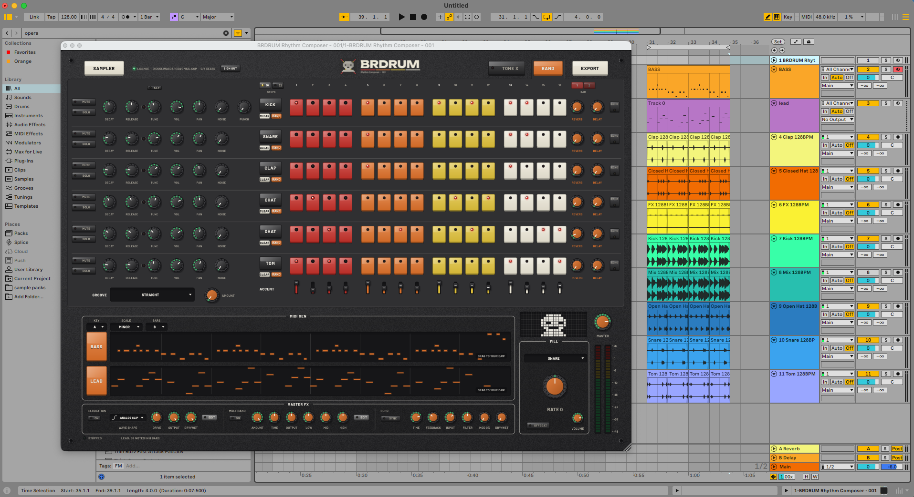
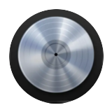
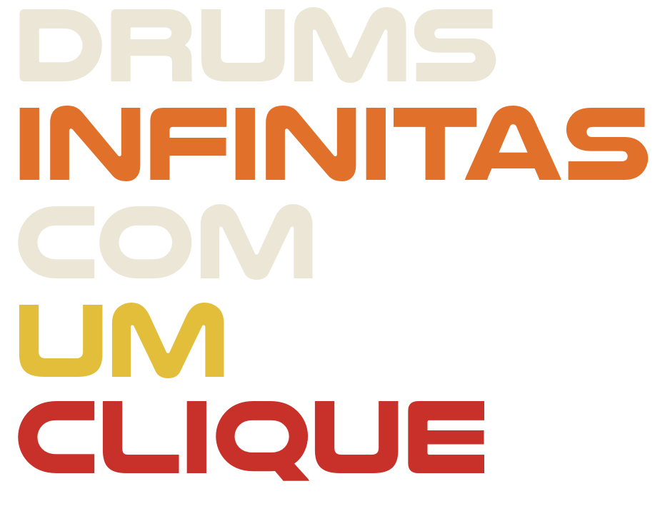

Solo
-20%R$39,90
por mês · R$ 478,80 cobrado uma vez, 12 meses
R$ 39,90 por computador · 1 acesso
- 1 computador ativo por vez
- VST3 e AU, Mac e Windows
- 232 samples de fábrica e todas as atualizações
Motor C++ do plugin em WebAssembly · samples de fábrica · não é vídeo, é o instrumento Arraste os knobs · duplo clique volta ao padrão · clique no nome do instrumento pra trocar o som

compatível com todas as DAWs



Milhares de possibilidades com os seus samples e MIDIs, além dos pacotes que já vêm dentro. Aperta RAND e sai uma batida pronta; aperta BASS e ele sorteia um baixo da sua pasta de MIDIs, no tom certo.
| Formatos | VST3 · AU |
|---|---|
| Sistemas | macOS 10.15+ · Windows 10/11 |
| Bateria | 6 instrumentos · 16 passos · batida pronta em 1 clique |
| Sons | 232 de fábrica + os seus |
| Baixo e melodia | sorteia um dos MIDIs da sua pasta, no tom da batida · arrasta pro DAW |
| Viradas | 11 velocidades, de 1/16 a 2 compassos, com contratempo |
| Afinação | TONE X: até 20x mais agudo ou grave, por instrumento |
| Master FX | saturação com 8 tipos, compressor de três faixas com preset OTT e echo |
| Export | um wav por instrumento (bumbo, caixa, palma, chimbais, tom) + um wav só dos efeitos (reverb e delay) + o mix completo |
| Licença | por conta · 1, 3 ou 5 computadores |
R$39,90
por mês · R$ 478,80 cobrado uma vez, 12 meses
R$ 39,90 por computador · 1 acesso
R$109,90
por mês · R$ 1.318,80 cobrado uma vez, 12 meses
R$ 36,63 por computador · 3 acessos
R$179,99
por mês · R$ 2.159,88 cobrado uma vez, 12 meses
R$ 36,00 por computador · 5 acessos
Pagamento único por período, sem renovação automática. Pix, cartão ou boleto pelo Mercado Pago. A licença fica na sua conta: você entra com e-mail e senha dentro do plugin, e cada computador que entra ocupa um acesso. Precisa trocar de máquina? Desativa a antiga no próprio plugin ou na página da conta.
Pagamento único, sem mensalidade. Pix, cartão ou boleto pelo Mercado Pago. A licença fica na sua conta.
compatível com todas as DAWs
Baixar para Mac.pkg · Intel e Apple Silicon · macOS 10.15+ Baixar para Windows.exe · Windows 10/11, 64 bits